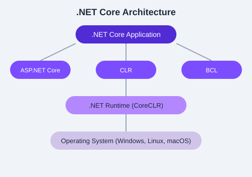

A condensed reference for .NET Core runtime, libraries, SDK commands, compiler switches, API surface, and NuGet packaging. Bookmark this chapter for quick lookup during development.
The runtime (dotnet) hosts and executes managed applications. Key concepts:
dotnet.exe) — The native host that loads the runtime.Microsoft.NETCore.App.--apphost.dotnet --info # Runtime environment details
dotnet --list-runtimes # Installed runtimes
dotnet --list-sdks # Installed SDKs
dotnet --version # Current SDK versionRuntime behavior can be tuned via runtimeconfig.json or environment variables:
{
"runtimeOptions": {
"configProperties": {
"System.GC.Server": true,
"System.GC.Concurrent": true,
"System.Threading.ThreadPool.MinThreads": 4,
"System.Runtime.Serialization.EnableUnsafeBinaryFormatterSerialization": false
}
}
}The C# compiler (csc) is invoked automatically by dotnet build. Key switches:
| Switch | Description |
|---|---|
-target:exe | Build a console executable |
-target:library | Build a DLL |
-out:<file> | Specify output file name |
-optimize+ | Enable compiler optimizations |
-langversion:12 | Set C# language version |
-nullable:enable | Enable nullable reference types |
-define:DEBUG | Define preprocessor symbol |
-p:<prop>=<val> | Pass MSBuild property (via dotnet build) |
dotnet build -p:Optimize=true -p:DefineConstants=TRACE
dotnet build -p:WarningLevel=5 -p:TreatWarningsAsErrors=true
The .NET Base Class Library provides thousands of types. Below are the most essential namespaces:
Object, String, Int32, Boolean, DateTime, TimeSpan, Guid, Uri, Version, Enum, Convert, Math, Random, Console, Environment.
string path = Environment.GetFolderPath(Environment.SpecialFolder.MyDocuments);
int hash = "hello".GetHashCode();
Guid id = Guid.NewGuid();
DateTime now = DateTime.UtcNow;List<T>, Dictionary<K,V>, HashSet<T>, Queue<T>, Stack<T>, ArrayList, Hashtable, IEnumerable<T>, ICollection<T>, IReadOnlyList<T>.
var dict = new Dictionary<string, int> { ["one"] = 1, ["two"] = 2 };
var list = new List<int> { 1, 2, 3 }.AsReadOnly();File, FileInfo, Directory, DirectoryInfo, Path, StreamReader, StreamWriter, FileStream, MemoryStream, BinaryReader, BinaryWriter.
string content = File.ReadAllText("data.txt");
var files = Directory.EnumerateFiles(@"C:\logs", "*.log");Enumerable provides extension methods: Where, Select, OrderBy, GroupBy, Aggregate, Any, All, Count, First, FirstOrDefault, Single, Skip, Take, Distinct.
var result = numbers.Where(n => n > 5).Select(n => n * 2).OrderByDescending(n => n).ToList();Task, Task<T>, ValueTask, ValueTask<T>, Parallel, Task.Run, Task.WhenAll, Task.WhenAny, CancellationToken, CancellationTokenSource.
var data = await httpClient.GetStringAsync(url);
var results = await Task.WhenAll(task1, task2, task3);NuGet is the .NET package manager. Key commands and conventions:
dotnet add package Newtonsoft.Json --version 13.0.3
dotnet remove package Newtonsoft.Json
dotnet list package
# Package reference in .csproj:
<PackageReference Include="Newtonsoft.Json" Version="13.0.3" />Common package sources: nuget.org, GitHub Packages, Azure Artifacts, and local/network feeds.
NuGet uses semantic versioning (semver): Major.Minor.Patch[-prerelease]. Use floating versions with caution:
<PackageReference Include="MyLib" Version="2.*" />
<PackageReference Include="MyLib" Version="*-*" /> .txt files from a directory, counts the frequency of each word across all files, and outputs the top 10 most frequent words. Use System.IO for file access, System.Linq for grouping/ordering, and System.Collections.Generic for the dictionary.